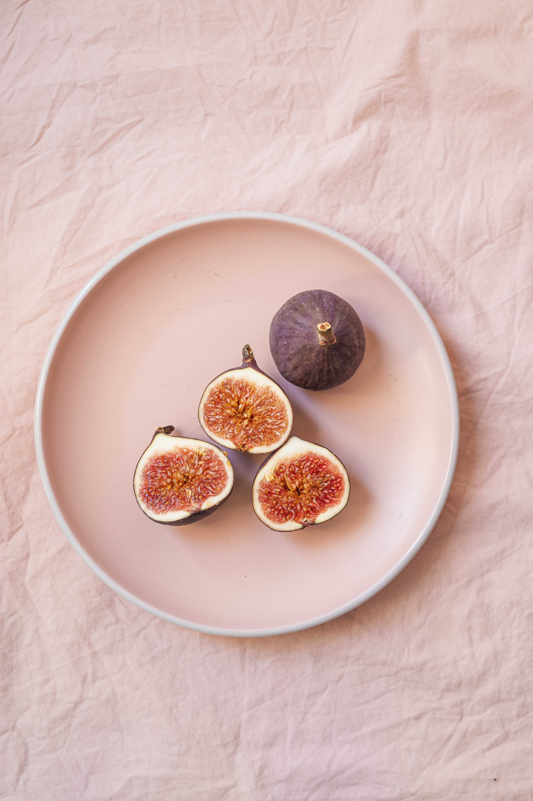

독을 품은 우파나무, 쐐기풀, 인도 삼나무, 호프, 빵나무, ㅃㅇ나무, 고무나무 그리고 그 밖에
우유같이 흰 수액이 나오는 모든 식물이 무화과나무의 친척이라 할 수 있다.
척박한 이집트 땅에서는 더 좋은 나무를 구하기 어려울 때
무화과나무로 미라의 관을 짰으며, 유목민은 이 나무 그늘에서 야영했다.
이들 방랑자에게 무화과나무 열매는 매우 귀중한 양식이었다. 이 나무 아래에서 기도하는 사람들도 없지는 않지만,
예수를 팔아 넘긴 제자 유다가 이 나무에 목을 매다는 바람에 악령이 깃들었다고
여겨져 종교적인 의식을 행하지 않는다.
유다는 장미 덤불에서 종려나무에 이르기까지 손에 닿는 나무라는 나무는 모조리 망쳐 버렸다.
그러나 성 아우구스티누스는 그런 건 전혀 문제가 되지 않는다는 것을 깨달았다.
어느 날 무화과나무 아래에서 기도하며 회개하는데, 나무가 아이의 목소리로 그에게 "펼쳐 읽으라"라고
반복해서 속삭였다. 아우구스티누스는 그것을 ≪성서≫를 펼쳐 가장 먼저 눈에 띄는 구절을 읽으라는 신의 계시로 이해했다.
그는 당장 가까운 친구 집으로 달려가 ≪성서≫를 펼쳤다.
<로마서>의 한 구절이 눈에 들어왔다.
"방탕하지 말며, 술 취하지 말며, 음란하거나 호색하지 말며, 다투거나 시기하지 말며, 정욕을 위하여 육신의 일을 도모하지 말라."
아우구스티누스의 지난 삶을 지적하는 말이었다. 모든 의심이 사라졌다. 그는 마음을 고쳐먹고 새 사람이 되었다.
무화과나무 아래에서 잠이 들면 자칫 위험할 수도 있다.
수녀 ㅇ령이 나타나 잠든 이를 흔들어 깨워 칼을 건네주는데, 잠결에 칼날을 받아 들면 유령이 그 칼로
심장을 찔러 버리고, 손잡이를 잡으면 행운을 빌어주고 떠난다.
예수의 저주를 받은 나무도 한 그루 있다. 어느날 몹시 목이 말랐던 예수가
무화과나무를 발견하고 열매를 먹으려고 하는데 나무에 열매가 하나도 없었다.
화가 난 예수는 그 나무가 앞으로 영원히 열매를 맺지 못할 것이라고 저주했다.
무화과나무는 불에 던져봤자 그을리기만 할 뿐 타지 않아서 땔감으로조차 쓸모가 없다.
몇몇 신학자들은 아담과 이브가 따먹은 선악과가 사실 사과가 아니라
무화과나무였다고 주장하기도 한다.
성모마리아가 아기 예수를 안고 헤롯왕의 군대로부터 도망칠 때 갈라진 몸통 속에 모자를 숨겨 준 것도 무화화과 나무이다.
붓다가 그 아래에서 진리를 깨달았다는 반얀나무 또는 뵈수나무도 무화과나무의 일종이다.
힌두교 3대 신 중 하나인 비슈누도 거대한 보리수나무 그늘에서 태어났다.
인도 봄베이 지방에 있는 한 반얀나무는 수령이 3000년이 넘는다. 신이 이 나무를 보호해
단 한 번도 날붙이에 다치지 않았다고 한다.
그리스신화에 따르면 대지의 여신 레아가 티탄족 하나를 무화과나무로 바꾸어 버렸다고도 하고,
어느 곳에서는 술의 신 바쿠스가 만든 나무라고도 한다. 로마에서는 바쿠스가 무화과나무에 열매가 많이 맺히게 하는 법을
알려주었다고 해서 다산의 상징으로 여겼다.
로마 건국 신화에도 무화과나무가 등장한다. 누미토르와 아물리우스 형제는 씨족의 지배권을 두고 다툼을 벌였다.
동생 아물리우스는 형을 죽이고 족장이 된 다음, 형수 레아를 신전의 제사장으로 앉혀
아이를 낳지 못하게 하는 한편, 후환을 없애고자 갓 태어난 쌍둥이 조카 로물루스와 레무스마저 죽이려고 했다.
그러나 병사들이 도착했을 때는 레아가 미리 알고 시종 파우스툴루스에게 맡겨 아이들을 숨긴 뒤었다.
아물리우스는 포기하지 않고 비슷한 나이의 갓난아이를 모두 죽이라고 명령했다.
파우스툴루스는 할 수 없이 두 아기를 바구니에 담아 강에 띄워 보냈다.
바구니는 무화과나무 가지에 걸려 멈추었고, 지나가던 늑대가 젖을 물려 아기들을 키웠다.
이 두 아이가 성장해 카피톨 언덕에 고대 로마를 건설했다.
트로이 전쟁 때 그리스군 최고의 예언자였던 칼카스와 동료 예언자 몹소스의 대결에서도 무화과나무가
중요한 역할을 했다. 칼카스가 먼저 눈앞에 보이는 무화과나무에 열매가 몇 개 열려 있는지 물어 보았다.
몹소스는 9999개가 열렸다고 대답했다. 칼카스가 직접 세어보니 9999개가 열려 있었다. 칼카스는 자신이
몹소스보다 못하다는 걸 인정하고 자괴감의 빠져 스스로 목숨을 끊었다.
